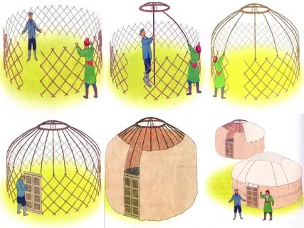

Алгоритм және оның қасиеттері. Алгоритмнің түрлері. IDE-мен танысу және тіл алфавиті.
Мысал 1.«Киіз үй» алгоритмі
1) киіз үйдің керегесі құрылады
2) шаңырағын көтереді
3) уықтарын қадайды
4) сақырлауық (екі жаққа ашылатын есіктері) құрылады
5) туырлық жабылады
6) үзік құрылады
7) түндік жабылады

Сурет 1 -
Киіз үйді құру алгоритмі
Осы тақырыпқа «Қымыз дайындау»
алгоритмін беруге болады. Қымыз – қазақ халқының ұлттық тағамдарының ішіндегі
ең құрметті дастархан дәмінің бірі. Қымыз- қазақтың ертедегі көшпелі өмірінде
ауруға ем болып, сауға қуат берген асы.
Мысал 2.«Қымыз дайындау» алгоритмі
АТАУЫ
Қымыз дайындау.
Сипаттама
Жаңа сауылған бие сүтін сүзіледі
Суымай тұрған күбідегі саумалдың үстіне құйылады
30-40 минут кбіде пісіледі
Күбінің аузы тығындалады